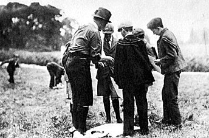
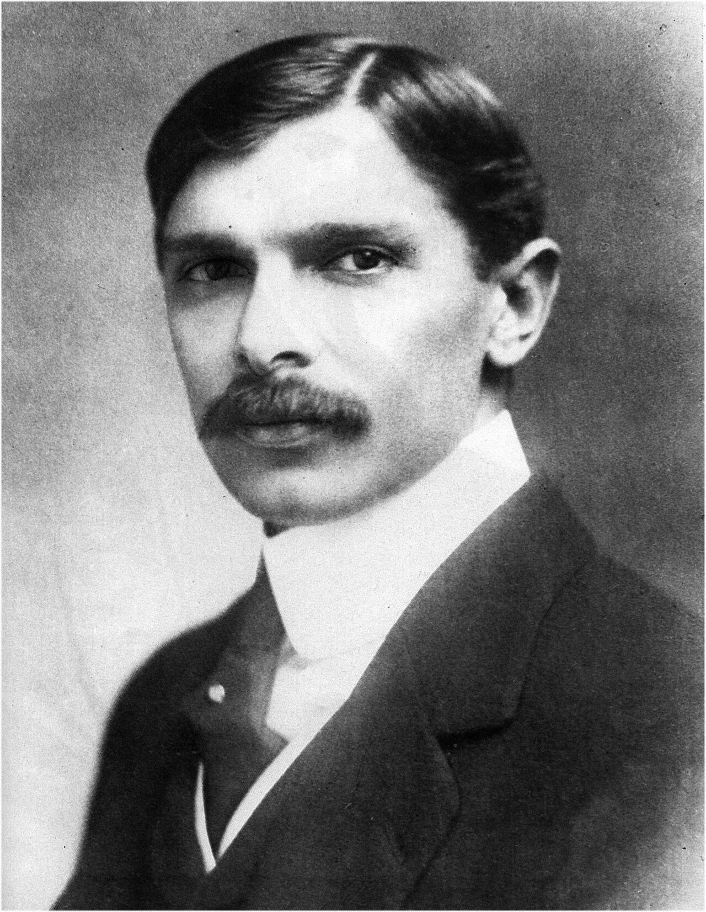
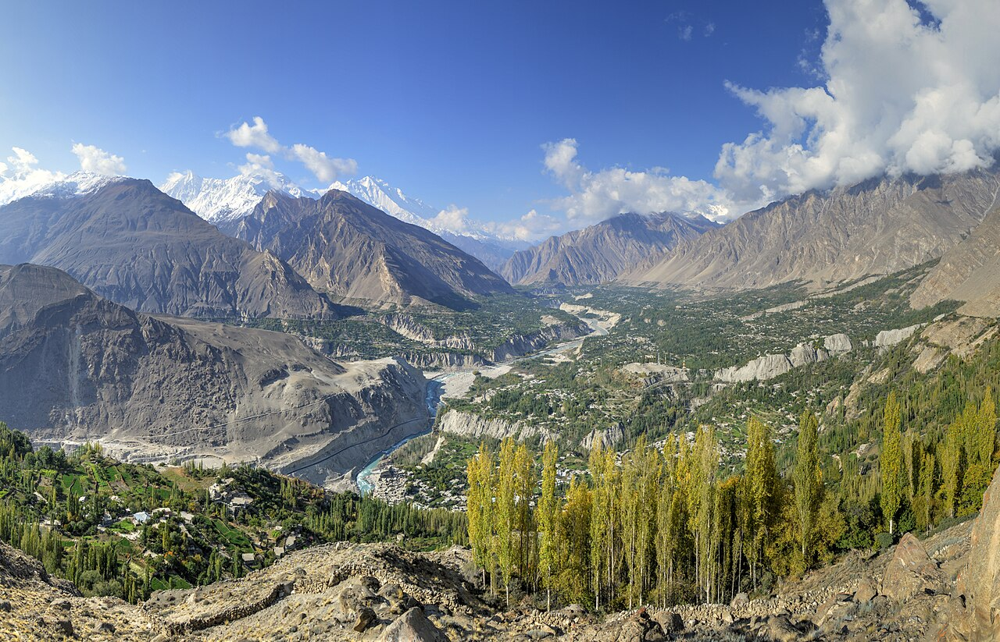
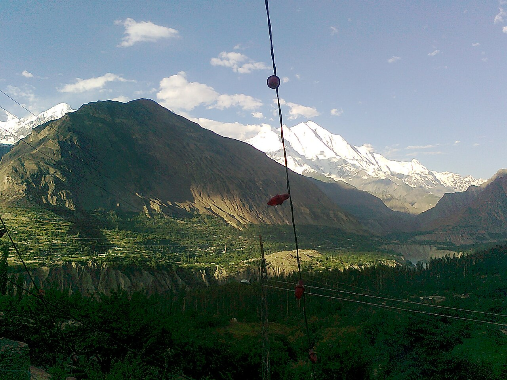
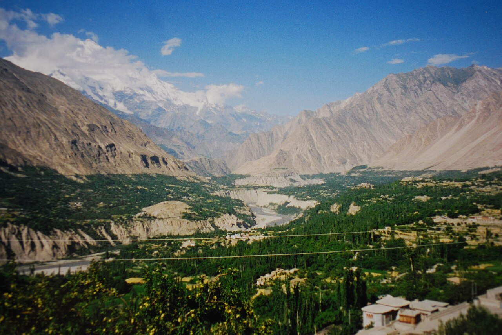
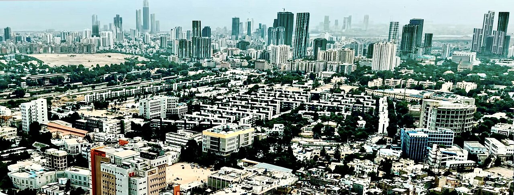
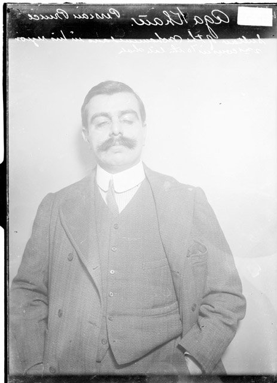

Our history
From Brownsea Island to Pakistan, from the valleys of Hunza to the coast at Karachi: a short history of Scouting and of the Ismaili Scouts who carry it on.
How Scouting began
In August 1907 a British officer, Robert Baden-Powell, took twenty boys from different backgrounds to camp on Brownsea Island off the south coast of England. They lived in patrols, cooked their own food, learned tracking, first aid and knots, and sat around a campfire each night. The experiment worked, and his book Scouting for Boys (1908) carried the idea across the world within a few years.
Scouting reached the Indian subcontinent almost at once: the first troops appeared around 1909, and by the 1920s there were Scouts in Karachi, Lahore, Peshawar and the princely states. Today the World Organization of the Scout Movement counts more than 57 million members in over 170 countries, all sharing the same Promise, Law and motto: Be Prepared.

Baden-Powell and the first Scouts, Brownsea Island, 1907. Public domain, via Wikimedia Commons.
Scouting in Pakistan
When Pakistan was created, its Scouts organised themselves within months. On 1 December 1947 the Pakistan Boy Scouts Association (PBSA) held its first meeting in Karachi, and Quaid-e-Azam Muhammad Ali Jinnah signed its charter the same day. On 22 December 1947 he took the oath as the nation's first Chief Scout. The World Organization of the Scout Movement recognised PBSA in April 1948.
The Quaid said that "Scouting can play a very vital role in forming the character of our youth." Today PBSA has well over half a million members organised in regional associations for Sindh, Punjab, Khyber Pakhtunkhwa, Balochistan, Gilgit-Baltistan, Azad Jammu and Kashmir and Islamabad. All Ismaili Scout units in Pakistan work under the PBSA umbrella; its official website is pakscouts.org.

Quaid-e-Azam Muhammad Ali Jinnah, first Chief Scout of Pakistan. Public domain, via Wikimedia Commons.
Scouting in Hunza
In Hunza, Ismaili Scouts are organised as the Ismaili District Boy Scouts Association (IDBSA) Hunza, a branch of the Gilgit-Baltistan Boy Scouts Association and registered with PBSA.
Scouting took root in Hunza in the decades after independence, alongside the Jamat's long tradition of volunteer service, and grew village by village until it became part of everyday community life. Today the district is organised into seven regions (Shinaki, Aliabad/Hyderabad, Altit/Karimabad, Gulmit, Shimshal, Sost and Chipurson), each with its own Assistant District Scouts Commissioner and its own Shaheen, Scout and Rover groups.
IDBSA Hunza reports that more than 85% of children and young people aged 5 to 25 in its area are members, perhaps the highest participation of any Scouting body in Pakistan.

Hunza Valley from Eagle's Nest. Alllexxxis, CC BY-SA 4.0.
Service in the mountains
Camps & training
Winter and summer camps, Scout Leader Training Courses, pioneering and camp-craft, first aid, and youth forums that build tomorrow's leaders.
Community service
Stewardship at Jamati gatherings and public events, clean-up drives, tree planting and traffic and crowd management for the district.
Relief & rescue
First on the ground when earthquakes, landslides, glacial floods and road blockages strike the valleys. Service before self in its truest form.
Ismaili Scouts across Pakistan
Travelling south from Hunza, Ismaili Scout units serve Jamats in every region where the community lives. Each is organised as a district association under PBSA, and every unit shares the same uniform, the same Promise and Law, the same Chief Scout and the same motto: service before self.

Gilgit & Nagar
IDBSA Gilgit serves the regional capital and surrounding valleys: winter camps, city clean-up drives, Chief Scout Day parades and the region's first Quaid-e-Azam Badge awards.

Ghizer & Puniyal
Along the Gilgit river to the west, IDBSA Puniyal and its sister groups in Ghizer run Scout and Shaheen units in the villages from Gahkuch to Yasin and Ishkoman.
Chitral
Across the Shandur Pass, the Ismaili Jamats of Upper Chitral (Booni, Mastuj, Garam Chashma and the Yarkhun valley) keep their own Scout units, camping and serving in one of Pakistan's most remote districts.
Central Region
IDBSA Central Region links the Jamats of the middle of the country: Abbottabad and the Hazara division, Rawalpindi and Islamabad. Its units bring together Scouts from the mountains who have moved south for study and work with families long settled in the capital area.
Lahore & Punjab
The Ismaili Jamats of Lahore and the rest of Punjab keep their own Scout and Shaheen groups, joining the larger districts for national camps, jamborees and Chief Scout Day.

Karachi & Sindh: where it began
The Prince Aly S. Khan Kharadar and Garden Scout Troops were formed in Karachi in 1927 and the Vazir Rahim Boarding Troop in 1928. Karachi remains the largest centre of Ismaili Scouting in Pakistan, home to the historic Rover Crews, Cub Packs, Girl Guide Companies and bands, with further groups in Hyderabad and interior Sindh.
Prince Aly Khan, our first Chief Scout
In 1930, on the guidance of the 48th Imam, Mawlana Sultan Mahomed Shah, Aga Khan III, his son Prince Aly Salman Khan formally introduced Scouting to the Ismaili community of the subcontinent. He became the first Ismaili Chief Scout in 1931 and served until his death in 1960. The H.H. Prince Aga Khan Ismaili Scouts Association was established in 1936.
In 1965 Mawlana Hazar Imam appointed his brother Prince Amyn Mohamed as Chief Scout; he was invested in Karachi on 7 December 1974 before some 3,000 uniformed members and 10,000 members of the Jamat. The movement's two original sections, Boy Scouts and Wolf Cubs, live on today as the Scout Unit and the Shaheen Unit.

Sultan Mahomed Shah, Aga Khan III. Public domain.
Prince Aly Khan, first Ismaili Chief Scout. Public domain.
Milestones
- 1907
Scouting is born
Robert Baden-Powell camps with 20 boys on Brownsea Island, England. Scouting for Boys follows in 1908.
- 1909
Scouting reaches the subcontinent
The first troops are formed in British India, including the cities that would become Pakistan.
- 1927
First Ismaili troops
Prince Aly S. Khan Kharadar and Garden Scout Troops formed in Karachi.
- 1930
Ismaili Scout movement begins
Prince Aly Khan introduces Scouting to the Jamat on the guidance of Aga Khan III; Chief Scout from 1931. Association established 1936.
- 1947
Pakistan Boy Scouts Association
Founded in Karachi on 1 December; Quaid-e-Azam becomes first Chief Scout on 22 December. WOSM recognition follows in April 1948.
- 1965
Prince Amyn Mohamed named Chief Scout
Invested in Karachi on 7 December 1974 before 3,000 uniformed members.
- Today
Hunza to Karachi
Ismaili District Boy Scouts Associations serve Jamats from Hunza, Gilgit, Ghizer and Chitral down to Karachi and the rest of Pakistan, all under PBSA.
The Scout Promise & Law, our way
Duty to God and community
Faith and ethics are the foundation. Service to the Jamat and to wider society is how we live them out.
Friendship & non-violence
A Scout is a friend to all and a brother or sister to every other Scout, in thought as well as action.
Service before self
Personal interest comes second to the welfare of others. It is the motto that ties every generation of Ismaili Scouts together.
Sources: Pakistan Boy Scouts Association; IDBSA Hunza; Ismailimail (2009); Simergphotos (2013). Know more about how Scouting began in your region? Share it with us; we would love to add names, dates and photographs.